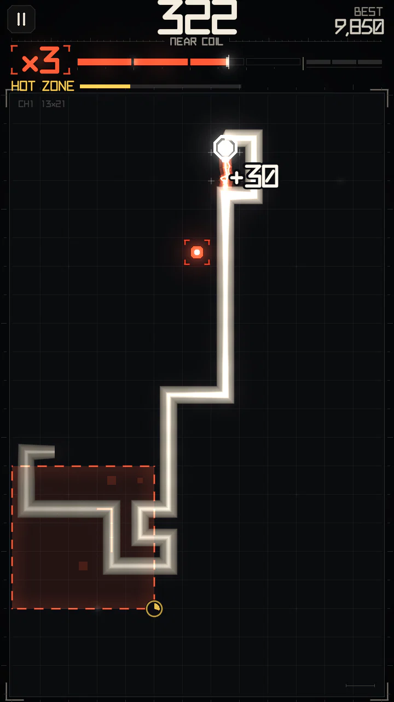

NEARCOIL guide
Classic Snake with one dangerous rule: passing right next to your own body charges a multiplier. It is easy to start: play close to your own body, build the multiplier, pull off risky maneuvers, survive Circuit Events and keep the chain going. This guide explains what each word on the screen means and how the score is made.


The one rule
You steer a snake on a 13 × 21 grid and eat red nodes, as in classic Snake. The difference: every time your head passes through a cell right beside an older part of your own body, that is a close call (GRAZE). Close calls fill the charge meter; a fuller meter means a higher multiplier (×1 to ×8), and the multiplier multiplies every point you score.
Charge drains when you play safe. So the game keeps asking: stay close to your body for one more turn, or get out while there is still room?
In one line: skim your body to charge the multiplier, eat nodes and pull off maneuvers while it is high, and don't box yourself in.
What is on the screen
- Score — top centre. Your best (Ranked) or the level target (Campaign) is on the right, the level timer on the left.
- Multiplier — the
×Nplate under the score. - Charge meter — the segmented bar next to it. One segment per multiplier step; when the bar reaches the end of a segment, the multiplier goes up. See Charge and multiplier.
- Event bar — under the meter while a Circuit Event is live: its name, progress and the time left. A module you carry (PHASE, SURGE, CUT) is shown on the right.
- Board — your snake (the head is the chamfered block with a contact face), the red node, and any structures of the current event.
Sections
Where points come from
Every source below is multiplied by the current multiplier at the moment it is scored.
| Source | Base points |
|---|---|
| Eating a node | 10 |
| Close call (GRAZE), per body cell | 2 |
| SQUEEZE / THREAD / NEEDLE | 15, 60, 150 + 4 per cell of the gap, ×1–×2 for a chain |
| Gates passed | 30, 60, 120 (1st / 2nd / 3rd gate) |
| Relay | 15 per terminal, 90 on completion |
| Hot zone | what it banked, paid on leaving |
| Live wire | 25 per skim, 100 when beaten |
| PHASE hop | 50 |
Points are never taken away: a crash ends the run, but the score you made stays. The multiplier is what you risk.